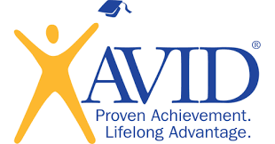

Leadership and Work Experience

Babysitting 2016-2021:
Took care of neighborhood and family friends' kids throughout high school, paid and unpaid. I
would lay out each kids' information or expectations the parents had for me, and communicate
with them throughout the day or night about how things were going.
- Professionally Certified through the American Red Cross Certified CPR & Certified Better
Babysitting Class & Continuing Education
College Planning Cohort 2018-2020:
Worked with the group leader to lay out the agenda for each meeting, logged conversation highlights
for each discussion and what work each group member had done, and worked with organizers to set up
and lay out food and drinks before each meeting.
Advancement Via Individual Determination (AVID) 2014-2021:
An in-school course that helps students improve high school performance, prepare for college, college
tours, goal planning and setting, etc. Would practice teamwork and leadership through exercises and
activities, practiced and strengthened note taking and organization skills, and implemented those
skills by organizing volunteer projects that include:
- A canned food drive, where proceeds went to the NFCC, which we volunteered at after we turned in
the cans
- Organized a talent show to raise money for a local elementary school
- Planned and provided food for the Annual Teacher Appreciation breakfast